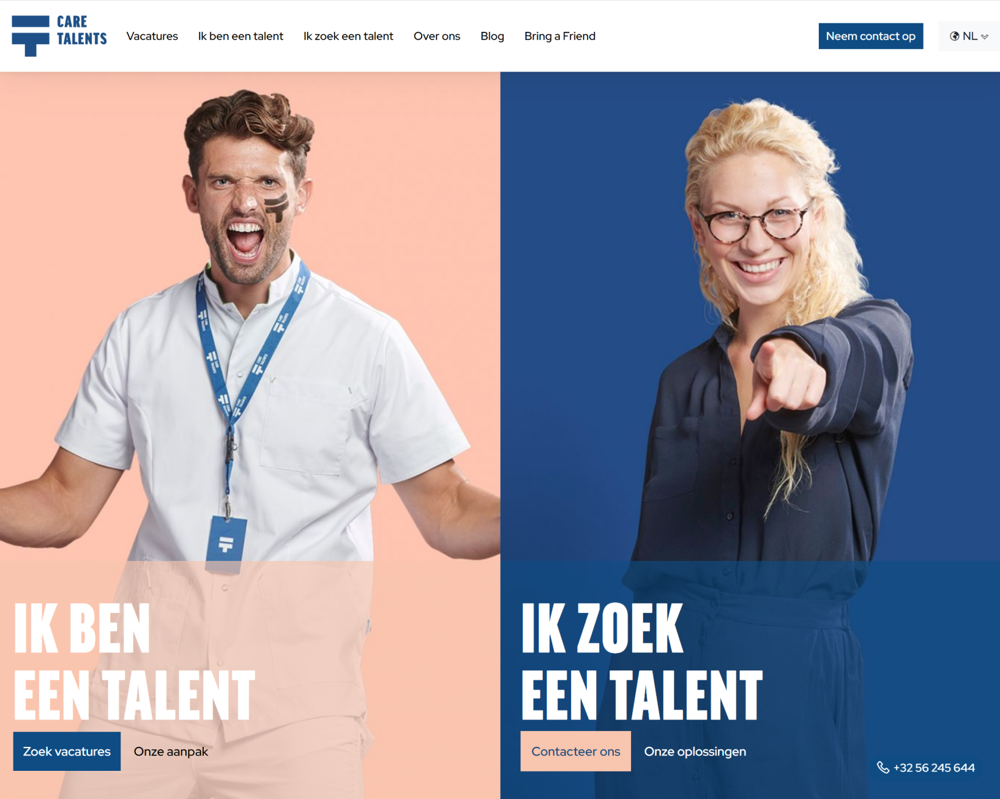
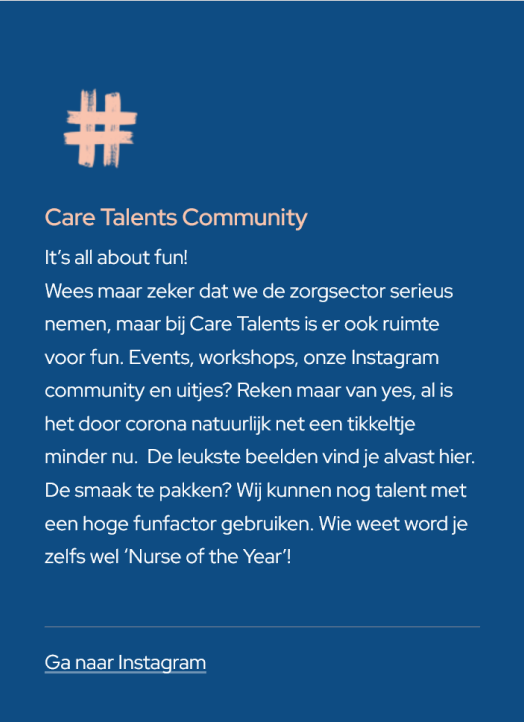
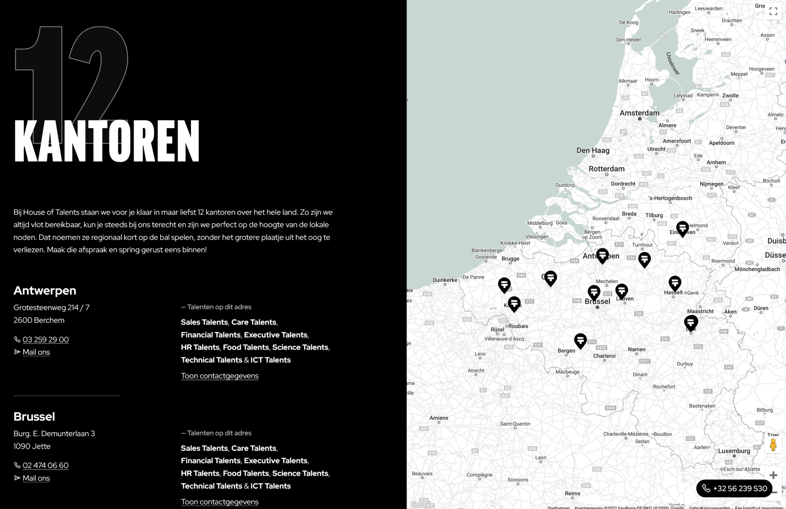
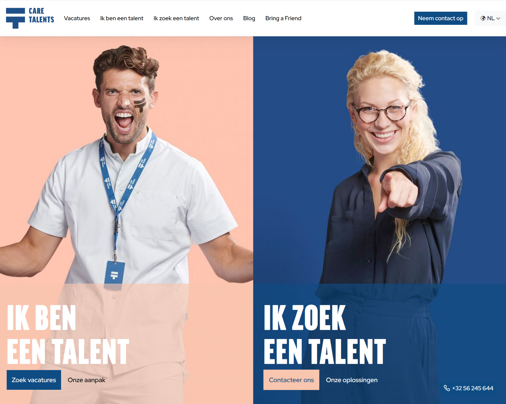
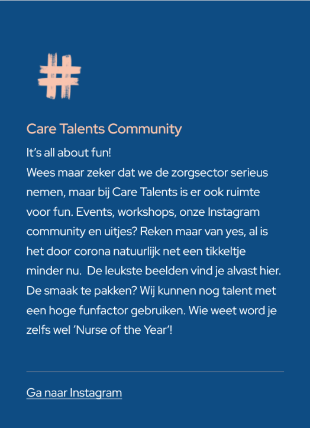
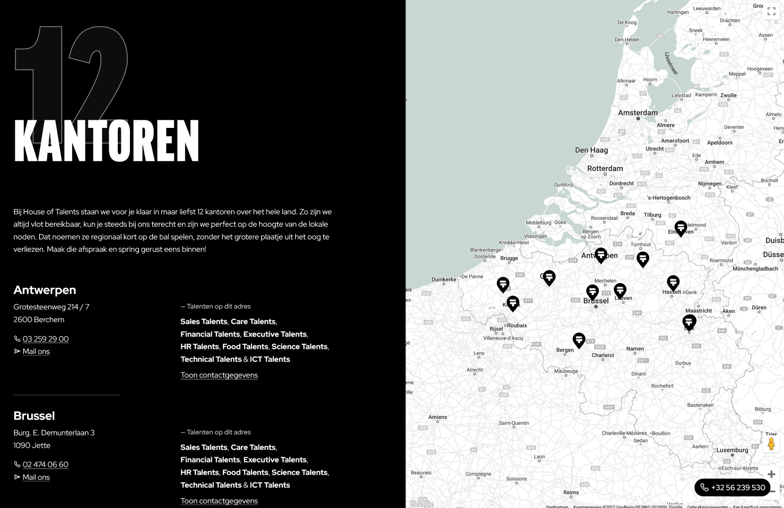
 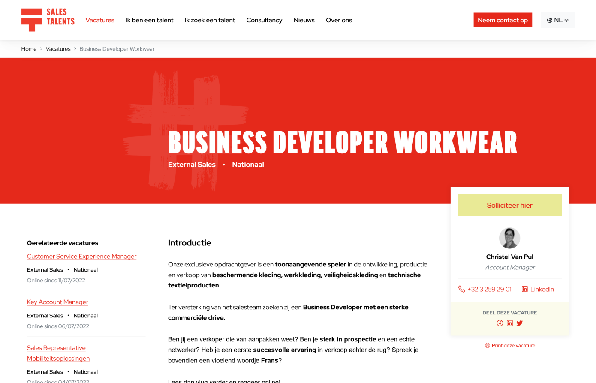
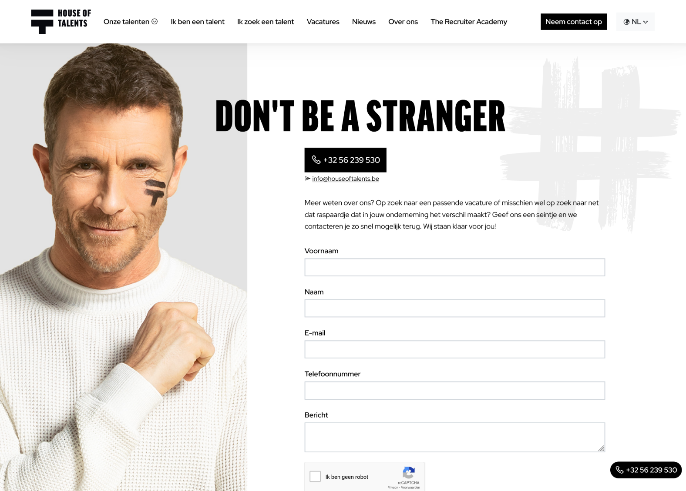
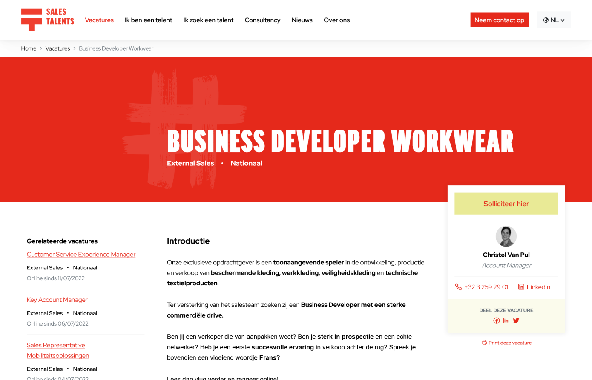
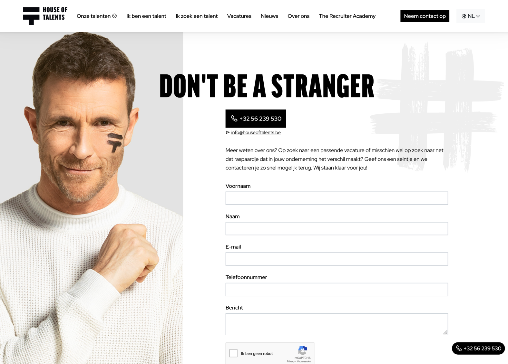
10 unique companies that harness their years of HR knowledge to find the perfect match between candidate and client.
All brought together under one branded umbrella and powered by a multisite CMS.
House of Talents
UI Design, FE Development
House of Talents brings together the HR expertise in 10 different fields and employs +2500 people. A new branding was created to streamline the communication and offers and a multisite with one backend was built. This presented some complex challenges as almost every expertise (or talent) had some form of 3rd party system to manage their job offers and a few unique wishes for their particular workflow.
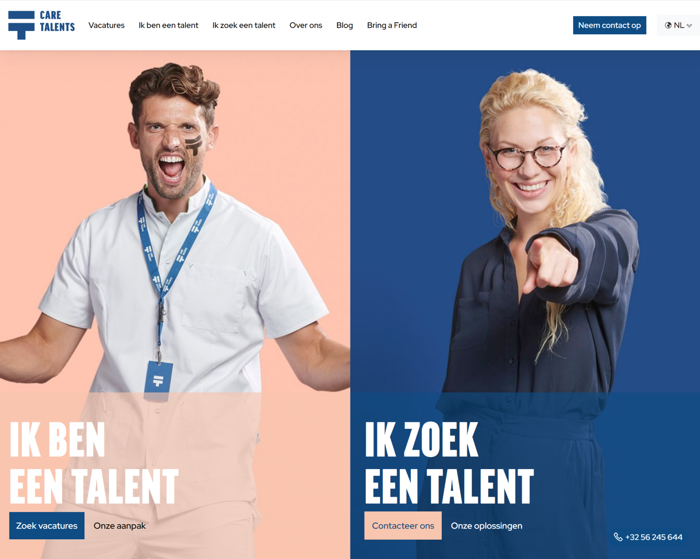
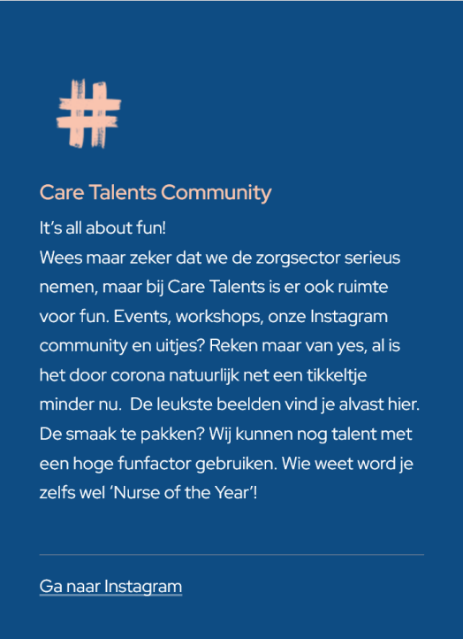
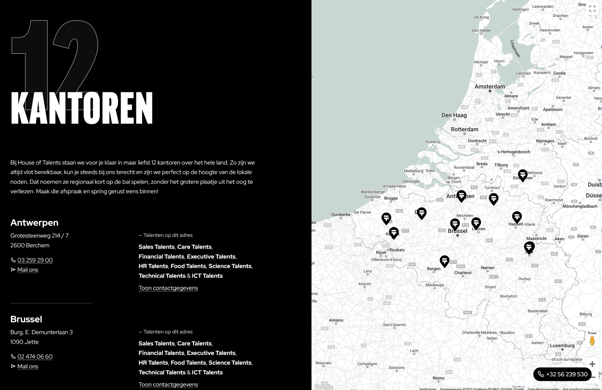
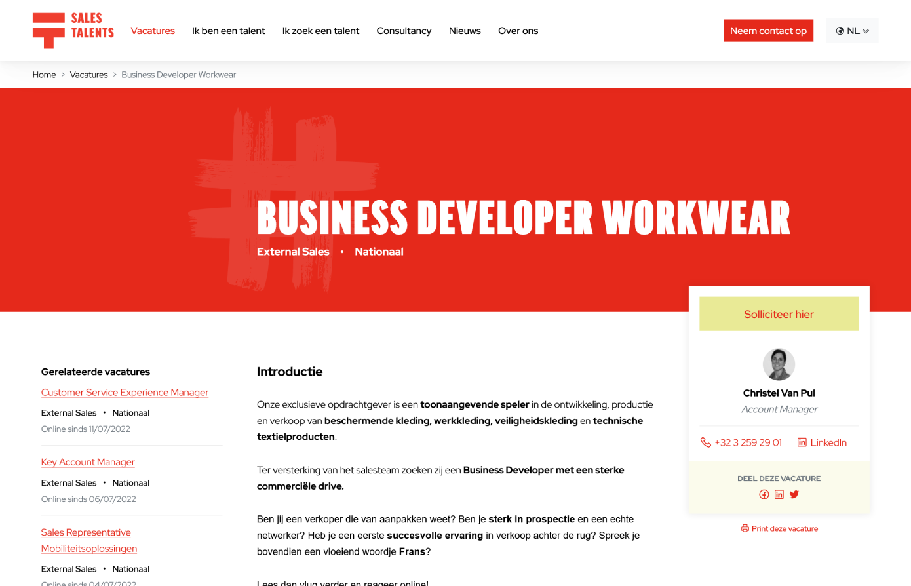
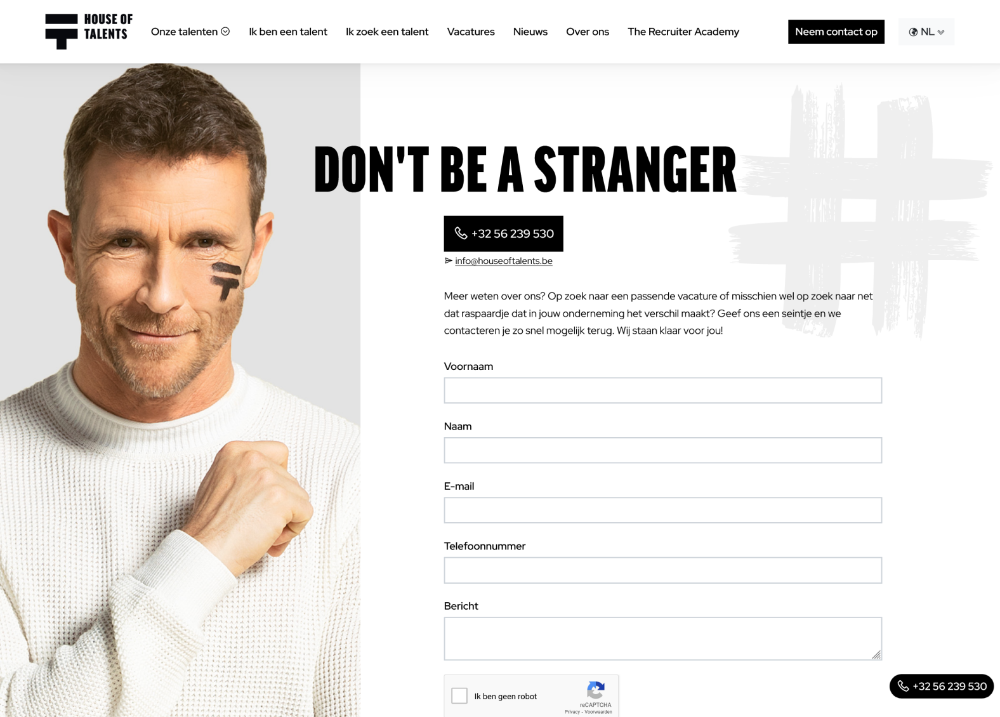
By really focussing on scalability and getting all stakeholders on the same page, a sound and interchangeable design and backend were created.
Users from all 10 companies can log in to the backend and have their roles configured. Pages can be easily created, duplicated and modified and the relevant subbrand can be picked. This made for an easy to manage CMS with House of Talents as the main administrator.


Helan
Partena and OZ merged into a new brand: Helan. This meant a new brand identity, new digital touchpoints but with the existing content and offers.
UI Design, FE Development